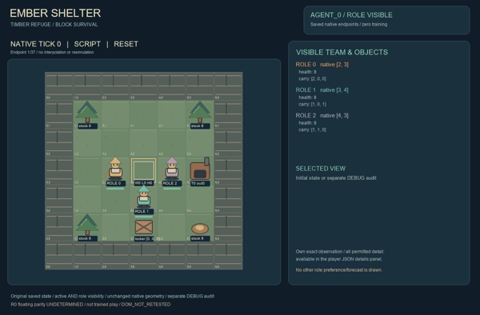
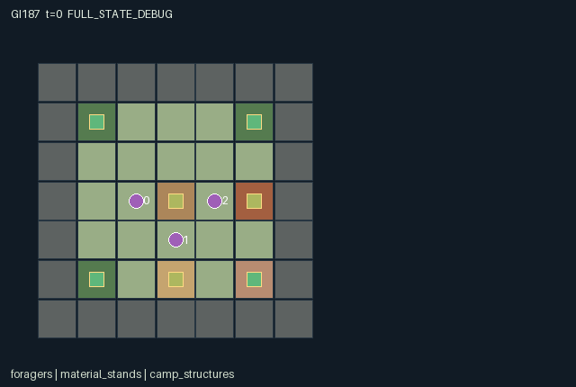

GI187 / SPATIAL
余烬庇护所
收集木材、烧制内衬并搭建共用庇护所，墙体与保温共同影响夜间生存。
Original saved demonstration
Recorded native state, often authored scripts or interventions; information scope and failures are preserved in the original provenance. This is a saved demonstration, not live browser play.

Release verification episode
Untrained uniform legal actions. Actual JAX state sampled along the full original episode; full-state debug camera. No human performance or learning claim.

Run this game
crucibles play --game 187
Start Python locally, then open the address printed by the terminal. Installation, multiplayer, takeover and keyboard controls →
Objective, rewards & ending
Exact task contract
{
"objective": "Survive three finite day/night cycles by building and maintaining a shared insulated, fueled shelter; balance communal materials against individual private stash priorities.",
"natural_termination": "All workers reach zero health, or clock reaches the third sunrise at t=54. Sunrise is natural termination even though it equals H; truncation remains false then.",
"interaction": "A worker wall, lining or fuel contribution changes every nearby worker later weather protection; kiln production consumes common finite material and creates local smoke, while handoffs and stashing change partner inventory opportunities.",
"observation_access": "Map, bodies, inventories, node quantities, construction, kiln, public current weather and aggregate locker contents are public. Role i sees only its preferred material and forecast for night i. Other forecasts and priorities are never entity attributes."
}Declared per-step reward bounds: -1 to 2. Observability: partially_observable.
Rules
- Three foragers share a timber shelter and a clay kiln; each pack holds only three material units.
- Build with timber and insulate with kiln lining. Both wall and lining must reach two for shared night protection.
- The kiln consumes one timber and one clay, finishes after three transitions, and releases smoke.
- A timber-fed hearth adds four shared heat. Night protection needs enough heat for the current cold severity.
- Day lasts 12 ticks and night six; the third sunrise ends the expedition at tick 54.
- At night, unprotected workers lose health. Shelter protection reaches Manhattan distance two from its footprint.
- Night end wears one wall level. Thick kiln smoke hurts nearby workers and can wear walls.
- Pass materials to adjacent workers or put your private preferred material into the locker for a personal bonus.
- Use actual wall, lining, heat, smoke and weather state to depict a timber-block refuge, warm hearth and cold forest clearing.
Original mechanism document (historical status wording retained)
# Ember Shelter
Status: AUTHORED_NOT_EXECUTED. Prospective initial-window source attempt 0; no candidate import, rollout, training, seed search or learned-policy result.
A warm refuge is a public good assembled from complementary materials. Burning timber now can protect all three foragers later, but it can also consume a teammate wall supply and increase smoke at the kiln.
## World, task and player interpretation
A 7 by 7 original block-world clearing contains three six-unit timber stands, one six-unit clay deposit, shelter at (3,3), kiln at (5,3), and locker at (3,5). Stone rim, trunks, clay and the two structures are solid. The locker apron is walkable. Three workers start adjacent to shelter with packs [2 timber], [1 timber + 1 lining], [1 timber + 1 clay], and health eight. Materials are whole units; pack capacity three forces deliveries and handoffs.
## Native controls and contextual feedback
Supply one integer action per role to raw_step. Any legal action sequence is supported; no script ID or scripted policy is consulted by the kernel. Directional actions remain selectable for able characters before joint completion; blocked moves spend the tick and stay in place. Interaction masks show the current prerequisites. Simultaneous requests can still contend for the same finite item, tile or station.
- 0: Wait. Let processing, weather and other workers advance.
- 1: Walk north. One cardinal tile; solid fixtures and occupied tiles block entry.
- 2: Walk east. One cardinal tile; solid fixtures and occupied tiles block entry.
- 3: Walk south. One cardinal tile; solid fixtures and occupied tiles block entry.
- 4: Walk west. One cardinal tile; solid fixtures and occupied tiles block entry.
- 5: Gather nearby material. Within one cell of a finite timber/clay stand, take one material if the three-slot pack has room; lowest eligible node index breaks ties.
- 6: Build shelter wall. Within distance two of shelter, spend one timber to add a wall level up to three.
- 7: Load kiln with timber and clay. Beside the empty kiln, consume one timber and one clay to start three-tick lining production.
- 8: Take kiln lining. Beside the kiln, take its finished lining if the pack has room.
- 9: Install shelter lining. Within distance two of shelter, spend one lining to raise insulation up to three.
- 10: Feed shelter hearth. Within distance two of shelter, burn one timber for four shared heat; requires heat at most eight.
- 11: Vent kiln smoke. Beside the kiln, remove up to three smoke.
- 12: Pass one material. Give the lowest-index carried material to the lowest-index adjacent conscious worker with pack capacity.
- 13: Stash private-priority material. Beside the locker, remove one item matching your private preference for an individual reward; it leaves the common material economy.
- 14: Repair shelter wall. Same one-timber wall operation as build, explicitly available after storm/fire wear.
- 15: Rest in daytime shelter. During phase 0..11 and within two cells of shelter, regain one health up to eight.
Movement uses conservative simultaneous occupancy: no swaps or entry into another role old cell. Same-destination ties rotate by t modulo three. Transactions rotate through all three workers and recheck current inventory, station, stock and capacity, so a mask is individual eligibility rather than a guarantee that all simultaneous claims succeed. No permanent player-index winner is built in.
## Exact transition, costs and completion
A cycle is 18 transitions: source states with phase 0..11 are daytime, 12..17 nighttime. Reset independently samples three cold severities in {1,2} and a permutation of material preferences. During a night transition a conscious worker is protected iff within distance two of shelter, wall>=2, lining>=2, and heat>=that night severity. Unprotected night damage is one health. Smoke>=6 additionally damages a worker within one of the kiln by one. Health is floored at zero; collapsed workers can only wait and do not auto-revive. Hearth fuel adds four heat up to 12; one heat is consumed each night transition. Smoke rises by two when kiln loading or stoking and falls by one every third tick or up to three on vent. Kiln timers include the loading transition. Night end or qualifying fire wear removes one existing wall level, with at most one wall loss per tick. Private stash gives +0.25 to its contributor, damage costs 0.1 per health unit, and a surviving worker receives +1 at t=54. Building itself is unrewarded.
## Information and visible scene
Every role sees physical inventory and shared construction. The locker aggregate is public in both observation and station attributes. The current weather level is public; each role privately knows exactly one night forecast indexed by its role, plus its own preferred stash resource. No renderer may reveal other forecasts or priority values. Zero-health bodies remain visible as collapsed characters and occupy their cells.
Independent block-survival art direction: cedar trunks, layered clay, hand-built timber wall sections, woven lining on the refuge, a glowing hearth, a chimney with state-bound smoke and blue night frost over the clearing. Worker packs visibly carry timber, clay or lining rather than generic points. Shelter and kiln status rows are semantic render bindings: wall changes the built silhouette, lining changes its interior surface, heat lights the hearth, kiln timer changes processing, and smoke controls the local plume. These are desired faithful drawings, not a claim that frames were rendered.
The scene is complete declarative presentation data with exact source/manifest identity. It does not implement a browser, keyboard or animation engine. A later trusted human-play adapter must separate Enter game from Watch replay, pass deliberate joint actions into this unchanged kernel, show legal controls, and preserve role visibility. Human play is separate from formal experiments.
## Cross-agent mechanisms and alternative responses
One worker wall investment changes the same cold transition for all nearby workers. A clay carrier can supply kiln production while a timber carrier chooses between lining fuel, hearth heat, wall repair and private stash. Venting can protect a nearby kiln operator but consumes a work tick; taking the finished lining can block a second batch until someone installs or moves it. The privately known night forecast can support anticipatory preparation through visible actions without exposing it directly. Candidate strategies include early shared refuge construction, staggered kiln/hearth labor, and private stockpiling with later repairs. Their relative value remains unmeasured.
## Declared invariants and implementation limits
Packs remain nonnegative with total at most three; health 0..8; wall and lining 0..3; heat 0..12; smoke 0..8; kiln output 0/1; kiln timer 0..3. Three construction/material ledgers support conservation: timber across nodes, packs, stash, wall, lost_wall and burned_timber; clay across nodes, packs, stash and processed_clay; lining equals the initial one plus completed kiln conversions across packs, installed lining, stash and output. A pending kiln conversion is represented by positive timer. Timber is spent on heat and kiln combustion; no resources regenerate. The model represents a shared shelter footprint and protection radius, not arbitrary wall placement or a fire-fluid simulator.
State leaves use fixed-shape int32, bool and, where declared, float32 arrays. Small signed fields are represented as int32; no PRNG-key surrogate is stored. Only reset uses the supplied key where explicitly stated. raw_step is deterministic for a given state/action and ignores its unused key. Natural termination has priority over the horizon. A terminal input preserves every state leaf and observation, returns zero float32 rewards and joint dones, and preserves terminated/truncated causes. No autoreset occurs in the kernel.
## Literal source evidence
- Literal stocks, resources and private draws: candidate.py:12 (def reset).
- Pack capacity and spatial interactions: candidate.py:43 (def legal_actions).
- Finite complementary kiln inputs: candidate.py:100 (s["carry"] = s["carry"].at[i,0]).
- Private stash competes with materials: candidate.py:116 (stash = act==13).
- Exact weather protection: candidate.py:131 (protected = near_shelter).
- Wall maintenance timing: candidate.py:137 (wear =).
- Absorbing terminal transition: candidate.py:151 (s = jax.tree.map).
- Required boundary signatures: candidate.py:12, candidate.py:64, candidate.py:43, candidate.py:73.
## Frozen author hypotheses
The build/heat/lining diagnostic spans the first night onset without searching a seed. It installs one wall and one lining, starts the kiln, feeds the hearth, adds a second wall, takes and installs kiln output, then waits through transition 13. Its paired version changes only agent_0 first wall contribution to wait. With identical later actions, source reasoning predicts two versus one wall at first cold exposure and therefore different partner health, while both branches have enough shared heat and lining.
playthrough.json contains literal joint integer vectors, seed 0 and UNEXECUTED_AUTHOR_HYPOTHESIS statuses. Seed 0 is a fixed author convention, not an observed good seed. Script legality and effects are reasoned from source only. No execution, score, success guarantee, effect magnitude, solvability, non-isomorphism or learning/transfer claim is made.
## Source and reference provenance
All game rules and kernel code were authored for this assigned game. No upstream implementation or commercial game asset was copied. The human-play and independent-family requirements are recorded with actual paths, bytes and SHA256 in author_input_freeze.json, together with every other closed input consumed.
- JaxMARL supplied README: parallel agent-keyed interfaces and __all__ for a later adapter. This package retains the assigned flat native kernel. https://github.com/bold-lab-ai/JaxMARL/blob/main/README.md
- Pgx supplied README: explicit legal masks, immutable game state and caller-supplied randomness are integration concepts; no board-game mechanic was copied. https://github.com/sotetsuk/pgx/blob/main/README.md
- Craftax supplied README: block materials, consequential inventory and explicit raw/autoreset separation informed the category/integration discussion; no Craftax world or rule implementation is used. https://github.com/MichaelTMatthews/Craftax/blob/main/README.md
- PureJaxRL README and Craftax_Baselines ppo_rnn.py were read as end-to-end JAX/recurrent-reset integration context. They are algorithm implementations, not a game library or replacement for the frozen experimental learner. No algorithm code, weights, dependencies or reported scores enter this game. https://github.com/luchris429/purejaxrl/blob/main/README.md ; https://github.com/MichaelTMatthews/Craftax_Baselines/blob/main/ppo_rnn.py
This environment can supply a future cross-environment adaptation task only after independent hash-bound integration. Actual R0 interface checks, eager/JIT/vmap behavior, paired effects, human input, replay, visual fidelity, training, scientific comparisons and transfer remain unverified.
Commands
Roles & abilities
agent_0 Cedar: starts with two timber
agent_1 Flax: starts with timber and lining
agent_2 Ash: starts with kiln timber and clay
Observation permissions
Training receives only the original observation rows. Role cameras use declared visibility; debug cameras are explicitly marked. Local benchmark records log debug exposure and role takeover history.
Exact observation layout
[
{
"slice": [
0,
1
],
"meaning": "t / 54",
"visibility": "public"
},
{
"slice": [
1,
2
],
"meaning": "Day-night phase (t modulo 18) / 17",
"visibility": "public"
},
{
"slice": [
2,
3
],
"meaning": "Current weather 0 daylight, 1 cold, 2 severe / 2",
"visibility": "public"
},
{
"slice": [
3,
52
],
"meaning": "Public tile map / 6, row-major yx",
"visibility": "public"
},
{
"slice": [
52,
58
],
"meaning": "All worker xy positions / 6",
"visibility": "public"
},
{
"slice": [
58,
61
],
"meaning": "All worker health / 8",
"visibility": "public"
},
{
"slice": [
61,
70
],
"meaning": "Pack counts by worker then timber/clay/lining / 3",
"visibility": "public"
},
{
"slice": [
70,
74
],
"meaning": "Material node stocks / 6",
"visibility": "public"
},
{
"slice": [
74,
80
],
"meaning": "Wall / 3, lining / 3, heat / 12, kiln timer / 3, kiln output, smoke / 8",
"visibility": "public"
},
{
"slice": [
80,
88
],
"meaning": "Current transition event flags in declared order",
"visibility": "public"
},
{
"slice": [
88,
91
],
"meaning": "Public locker totals by material / 24",
"visibility": "public"
},
{
"slice": [
91,
92
],
"meaning": "Own private preferred material index / 2",
"visibility": "self"
},
{
"slice": [
92,
93
],
"meaning": "Own forecast: role i alone initially knows night i severity / 2",
"visibility": "self"
},
{
"slice": [
93,
96
],
"meaning": "Own role one-hot",
"visibility": "self"
}
]Entity visibility & attributes
[
{
"id": "foragers",
"kind": "agent",
"count": 3,
"position": [
"pos"
],
"active": [
"agent_active"
],
"visibility": [
"agent_visible"
],
"attributes": [
{
"state_path": [
"health"
],
"meaning": "Health 0..8; zero means immobile",
"display": "bar"
},
{
"state_path": [
"carry"
],
"meaning": "Three-slot pack counts [timber, clay, lining]",
"display": "number"
}
]
},
{
"id": "material_stands",
"kind": "resource",
"count": 4,
"position": [
"resource_pos"
],
"active": [
"resource_active"
],
"visibility": [
"resource_visible"
],
"attributes": [
{
"state_path": [
"resource_kind"
],
"meaning": "0 timber, 1 clay",
"display": "category"
},
{
"state_path": [
"stock"
],
"meaning": "Remaining harvestable units",
"display": "number"
}
]
},
{
"id": "camp_structures",
"kind": "object",
"count": 3,
"position": [
"station_pos"
],
"active": [
"station_active"
],
"visibility": [
"station_visible"
],
"attributes": [
{
"state_path": [
"station_status"
],
"meaning": "Rows: shelter [wall, lining, heat]; kiln [timer, output, smoke]; locker [stashed timber, clay, lining]",
"display": "number"
}
]
}
]Actual verification & provenance
Per-game execution receipt
{
"game": "gi187",
"status": "PASS",
"verification_revision": 2,
"source_sha256": "14ff1ed4371e402b595847aeb5c0aebb6ddb37a7e2bba3c40c0180399740631d",
"seed": 20261101,
"runtime": {
"jax": "0.4.38",
"numpy": "1.26.4",
"devices": [
"TFRT_CPU_0"
]
},
"dimensions": {
"num_agents": 3,
"observation_size": 96,
"num_actions": 16,
"max_steps": 54
},
"checks": {
"eager_reset": {
"status": "PASS",
"seconds": 2.5544424057006836
},
"observation_spaces_legal_masks": {
"status": "PASS",
"seconds": 1.0898544788360596
},
"eager_step": {
"status": "PASS",
"seconds": 2.798524856567383
},
"jit_reset": {
"status": "PASS",
"seconds": 0.39351654052734375
},
"jit_step": {
"status": "PASS",
"seconds": 2.4573469161987305
},
"eager_jit_integer_parity_float_measurement": {
"status": "PASS",
"seconds": 0.00103759765625
},
"jit_vmap_reset": {
"status": "PASS",
"seconds": 0.3852095603942871
},
"jit_vmap_step": {
"status": "PASS",
"seconds": 2.5891945362091064
},
"outer_autoreset_api": {
"status": "PASS",
"seconds": 3.2100789546966553
},
"full_original_horizon_episode_and_render": {
"status": "PASS",
"seconds": 1.1196441650390625
}
},
"human_scores": null,
"browser_controls": "PENDING",
"failures": [],
"elapsed_seconds": 17.111196994781494,
"float_parity_max_abs": 5.960464477539063e-08,
"numerical_parity": "UNDETERMINED_NONZERO_FLOAT_DIFFERENCE",
"raw_terminal_absorbing": "PASS",
"terminal_outer_reset": "PASS",
"episode_steps": 34,
"scripted_random_returns": [
-0.30000001192092896,
-0.9000000134110451,
-1.0000000149011612
],
"terminal": true,
"demo_information": "FULL_STATE_DEBUG",
"demo_frames": 18,
"render_roles_checked": 3
}Chromium control verification
{
"game": "gi187",
"status": "PASS",
"human_scores": null,
"engineering": true,
"checks": [
"catalog_selected_and_real_native_reset",
"keyboard_native_direction_command",
"dom_queue_and_native_step",
"second_participant_ownership_and_native_joint_step",
"all_roles_individually_controllable_no_role_cap",
"explicit_debug_camera",
"release_to_pure_ai_without_reset",
"close_session_preserves_log"
],
"ui_sha256": "96243f9de144b80b5e20a114330e2206bdcd58d3efc9c6f13bbc08b95cacc14d",
"keyboard_action_id": 1,
"seconds": 6.087069272994995
}Original identity and file hashes
{
"id": 187,
"key": "gi187",
"title": "余烬庇护所",
"summary": "收集木材、烧制内衬并搭建共用庇护所，墙体与保温共同影响夜间生存。",
"tags": [
"建造生存",
"材料互补"
],
"family": "spatial",
"dimensions": {
"num_agents": 3,
"observation_size": 96,
"num_actions": 16,
"max_steps": 54
},
"source_sha256": "14ff1ed4371e402b595847aeb5c0aebb6ddb37a7e2bba3c40c0180399740631d",
"manifest_sha256": "e4f2925cc43c41cae0c5ed991093416dc56143cfc5a64b9505e3c44b6e2b53e5",
"files": [
{
"file": "candidate.py",
"sha256": "14ff1ed4371e402b595847aeb5c0aebb6ddb37a7e2bba3c40c0180399740631d",
"bytes": 9880,
"origin": "work/exp_2/game_incubator_v3/community_games222_225_visualization_root222_v1/native154_candidate/registry/v2/games/game-v3-00187/candidate.py"
},
{
"file": "manifest.json",
"sha256": "e4f2925cc43c41cae0c5ed991093416dc56143cfc5a64b9505e3c44b6e2b53e5",
"bytes": 13995,
"origin": "work/exp_2/game_incubator_v3/community_games222_225_visualization_root222_v1/native154_candidate/registry/v2/games/game-v3-00187/manifest.json"
},
{
"file": "scene.json",
"sha256": "0dd666058210d48245532597c4ea0dcf832b492ea3e8e83d4fbafa0e0d0476b5",
"bytes": 7633,
"origin": "work/exp_2/game_incubator_v3/community_games222_225_visualization_root222_v1/native154_candidate/registry/v2/games/game-v3-00187/scene.json"
},
{
"file": "mechanism.md",
"sha256": "0dcd6078b75c17ec275064e6b6afb84195799d32247cd54fd10e0b02a5a63cfc",
"bytes": 11266,
"origin": "work/exp_2/game_incubator_v3/sources/game-v3-00187/attempt_00/mechanism.md"
},
{
"file": "playthrough.json",
"sha256": "9a5ca83aaa294dae850ad2b4d15da185eec84b8a2c4727a7e1b5a13e39e8d213",
"bytes": 3879,
"origin": "work/exp_2/game_incubator_v3/sources/game-v3-00187/attempt_00/playthrough.json"
}
],
"original_status": "NATIVE154_REFERENCE",
"original_saved_replay": true,
"release_validation": "PASS",
"human_scores": null,
"browser_validation": "PASS"
}